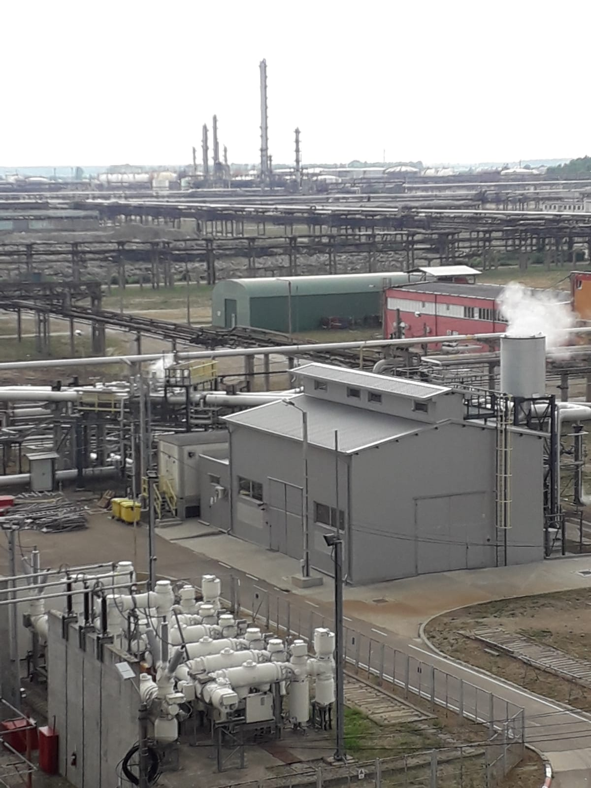

We execute work in the most demanding industrial environments, where safety regimes, permits and uptime requirements leave no margin for error.
Whether inside a refinery turnaround or a foundry maintenance scope, the same discipline applies: qualified people, permit-to-work compliance and a single point of accountability.

Maintenance and construction inside active chemical process plants, working under strict permit-to-work and hazardous-area regimes.
Piping, equipment and structural work in high-hazard petrochemical facilities where execution quality is non-negotiable.
Turnaround and routine maintenance scopes executed to refinery safety standards, with crews experienced in live-plant conditions.
Maintenance and construction work for foundry plant, material-handling systems and high-temperature process equipment.
Mechanical installation and upkeep across heavy manufacturing operations, supporting continuous production lines.
Plant maintenance and pipework for power and energy generation sites, delivered to the same safety and quality standards.
Tell us about your facility and scope — we will respond with a realistic proposal.